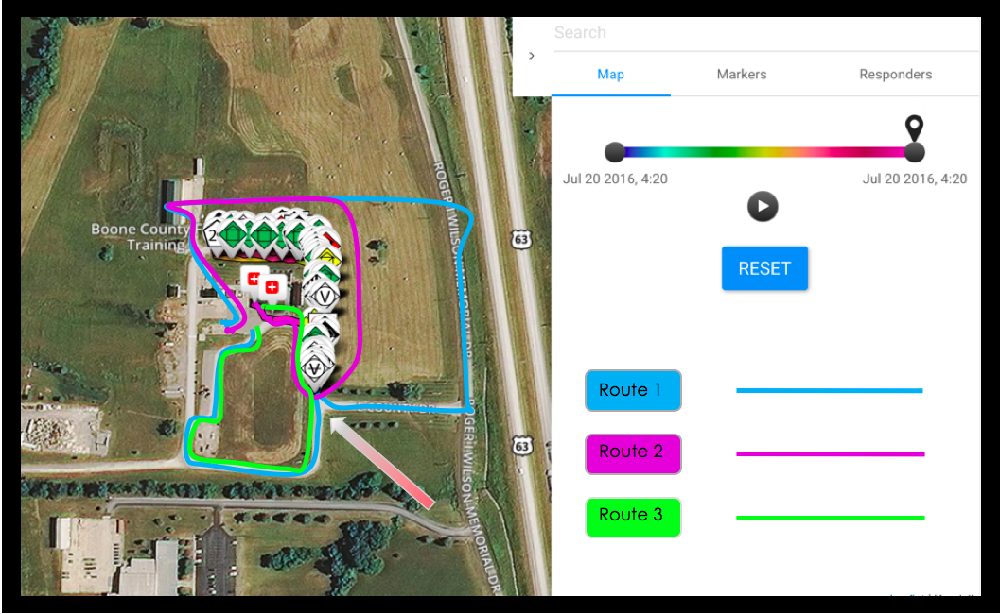

{% capture site_tags %}{% for tag in site.tags %}{{ tag | first }}{% unless forloop.last %},{% endunless %}{% endfor %}{% endcapture %}
{% assign tags_list = site_tags | split:',' | sort %}

   <article>
      <div class = "project-wrapper">
         
         <div class="project-txt">
            <h3 class="project-heading">Panacea's Cloud - Summer 2016</h3>
            Panacea's Cloud is an internet-free disaster managment application for triage scenarios. Over the summer, I worked on a <span class = "tech">REST API</span> written in <span class = "tech">Ruby on Rails</span> connected to a <span class = "tech">React.js</span> front end. In order to test performance, I also wrote random scenario generation scripts to produce dummy data, and implemented routing algorithms in <span class = "tech">PostgreSQL</span>.
            <br />
         </div>
      </div>
      <div class = "project-wrapper">
         
         <div class="project-txt">
            <h3 class="project-heading">Koan - Hack the North 2016</h3>
            Koan is a panic attack intervention app using a Muse EEG headband and real-time processing to detect panic attacks and notify users before symptoms become severe. Koan was built using a <span class = "tech">microservices</span> architecture, and incorporates <span class = "tech">Firebase</span>,<span class = "tech"> Node.js</span>, <span class = "tech">Ruby on Rails</span>, and a <span class = "tech">JavaScript</span> front with the Twillio messaging API. This was a four person project built in Waterloo, Canada.
         </div>
      </div>
      <br>
      <div class="project-wrapper">
         
         <div class="project-txt">
            <h3 class="project-heading">Trippie - WuHack 2015</h3>
            Trippie is a game based on the <span class = "tech">Trip Advisor API</span> and designed around Trivia Crack. Users are given a random review from across the globe and try to match it with the correct country. It also provides Google Maps visualization of the review location compared with where the user guessed using <span class = "tech">PHP</span> and <span class = "tech">JavaScript</span>. This project was built in collaboration with four other students and finished top five at WuHack 2015.
         </div>
      </div>
      <div class = "project-wrapper">
         
         <div class="project-txt">
            <h3 class="project-heading">WeatherVibe</h3>
             WeatherVibe is a <span class = "tech">Python Django</span> application exploring the effect of weather on moods of people across the country. Using the Twitter API, sentiment analysis, and weather information, we created a dashboard to interactively view the attitude of posts in real-time using <span class = "tech">JavaScript</span> Google maps heat maps. WeatherVibe began at Hack Illinois as a four person project and was continued personally after the event.
         </div>
      </div>
      <div class = "project-wrapper">
         
         <div class="project-txt">
            <h3 class="project-heading">Automatic Detection of Alcohol Use - MU Research</h3>
             In collaboration with graduate computer science students, we explored the application of machine learning algorithms and statistical analysis to predict use of alcohol given physiological data such as accelerometer, heart rate, and breath rate. I worked on automated data retrevial and pre-processing of phisiological signals using <span class = "tech">MATLAB</span> and the <span class = "tech">Python Pandas</span> and <span class = "tech">SciPy</span> libraries.
         </div>
      </div>
   </article><!-- /.hentry -->


